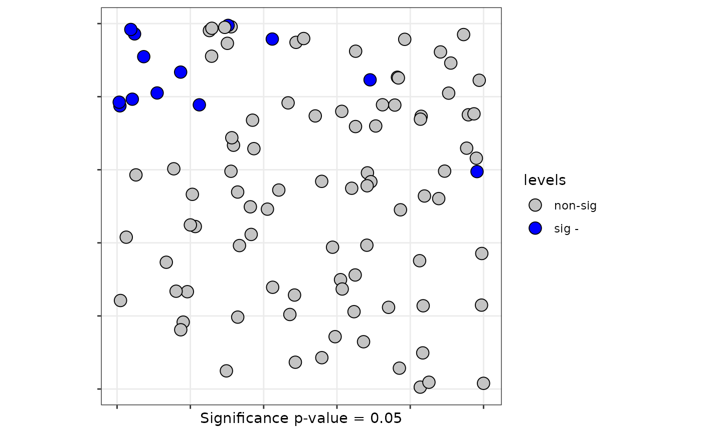

The plot() function allows the user to plot significant observations.
The print() function is used to print the number of runs in each localization. Additional information of
expected values and standard deviation, z-value ans p-value is prited for each observation.
Arguments
- x
a
localjcobject created byQ.test.- ...
further arguments passed to or from other methods.
- sf
optional argument for
plot()method to include a sf object (default = NULL)- coor
optional argument for
plot()method to include coordinates of points (default = NULL)- sig
significant level for each observation in
plot()method. Defaultsig = 0.05
References
Ruiz, M., López, F., and Páez, A. (2021). A test for global and local homogeneity of categorical data based on spatial runs. working paper.
Author
| Fernando López | fernando.lopez@upct.es |
| Román Mínguez | roman.minguez@uclm.es |
| Antonio Páez | paezha@gmail.com |
| Manuel Ruiz | manuel.ruiz@upct.es |
Examples
# Example 1: Local spatial runs test based on knn
N <- 100
cx <- runif(N)
cy <- runif(N)
x <- cbind(cx,cy)
listw <- spdep::knearneigh(cbind(cx,cy), k = 10)
p <- c(1/6,3/6,2/6)
rho <- 0.5
fx <- dgp.spq(p = p, listw = listw, rho = rho)
# Asymtotic version
lsrq <- local.sp.runs.test(fx = fx, listw = listw, alternative = "less")
print(lsrq)
#> runs.i E.i Std.i z.value p.value
#> 1 9 7.183838 1.59988 1.1351860 0.8718512930
#> 2 7 7.183838 1.59988 -0.1149076 0.4542591853
#> 3 7 7.183838 1.59988 -0.1149076 0.4542591853
#> 4 10 7.183838 1.59988 1.7602327 0.9608158220
#> 5 9 7.183838 1.59988 1.1351860 0.8718512930
#> 6 7 7.183838 1.59988 -0.1149076 0.4542591853
#> 7 2 7.183838 1.59988 -3.2401414 0.0005973521
#> 8 4 7.183838 1.59988 -1.9900479 0.0232928297
#> 9 7 7.183838 1.59988 -0.1149076 0.4542591853
#> 10 3 7.183838 1.59988 -2.6150947 0.0044601364
#> 11 9 7.183838 1.59988 1.1351860 0.8718512930
#> 12 8 7.183838 1.59988 0.5101392 0.6950230217
#> 13 3 7.183838 1.59988 -2.6150947 0.0044601364
#> 14 7 7.183838 1.59988 -0.1149076 0.4542591853
#> 15 3 7.183838 1.59988 -2.6150947 0.0044601364
#> 16 3 7.183838 1.59988 -2.6150947 0.0044601364
#> 17 8 7.183838 1.59988 0.5101392 0.6950230217
#> 18 9 7.183838 1.59988 1.1351860 0.8718512930
#> 19 5 7.183838 1.59988 -1.3650011 0.0861263477
#> 20 6 7.183838 1.59988 -0.7399544 0.2296638446
#> 21 8 7.183838 1.59988 0.5101392 0.6950230217
#> 22 8 7.183838 1.59988 0.5101392 0.6950230217
#> 23 6 7.183838 1.59988 -0.7399544 0.2296638446
#> 24 8 7.183838 1.59988 0.5101392 0.6950230217
#> 25 7 7.183838 1.59988 -0.1149076 0.4542591853
#> 26 3 7.183838 1.59988 -2.6150947 0.0044601364
#> 27 7 7.183838 1.59988 -0.1149076 0.4542591853
#> 28 7 7.183838 1.59988 -0.1149076 0.4542591853
#> 29 5 7.183838 1.59988 -1.3650011 0.0861263477
#> 30 8 7.183838 1.59988 0.5101392 0.6950230217
#> 31 6 7.183838 1.59988 -0.7399544 0.2296638446
#> 32 5 7.183838 1.59988 -1.3650011 0.0861263477
#> 33 9 7.183838 1.59988 1.1351860 0.8718512930
#> 34 7 7.183838 1.59988 -0.1149076 0.4542591853
#> 35 8 7.183838 1.59988 0.5101392 0.6950230217
#> 36 5 7.183838 1.59988 -1.3650011 0.0861263477
#> 37 10 7.183838 1.59988 1.7602327 0.9608158220
#> 38 3 7.183838 1.59988 -2.6150947 0.0044601364
#> 39 7 7.183838 1.59988 -0.1149076 0.4542591853
#> 40 8 7.183838 1.59988 0.5101392 0.6950230217
#> 41 5 7.183838 1.59988 -1.3650011 0.0861263477
#> 42 5 7.183838 1.59988 -1.3650011 0.0861263477
#> 43 5 7.183838 1.59988 -1.3650011 0.0861263477
#> 44 6 7.183838 1.59988 -0.7399544 0.2296638446
#> 45 9 7.183838 1.59988 1.1351860 0.8718512930
#> 46 9 7.183838 1.59988 1.1351860 0.8718512930
#> 47 7 7.183838 1.59988 -0.1149076 0.4542591853
#> 48 5 7.183838 1.59988 -1.3650011 0.0861263477
#> 49 8 7.183838 1.59988 0.5101392 0.6950230217
#> 50 3 7.183838 1.59988 -2.6150947 0.0044601364
#> 51 5 7.183838 1.59988 -1.3650011 0.0861263477
#> 52 6 7.183838 1.59988 -0.7399544 0.2296638446
#> 53 6 7.183838 1.59988 -0.7399544 0.2296638446
#> 54 4 7.183838 1.59988 -1.9900479 0.0232928297
#> 55 7 7.183838 1.59988 -0.1149076 0.4542591853
#> 56 7 7.183838 1.59988 -0.1149076 0.4542591853
#> 57 6 7.183838 1.59988 -0.7399544 0.2296638446
#> 58 7 7.183838 1.59988 -0.1149076 0.4542591853
#> 59 6 7.183838 1.59988 -0.7399544 0.2296638446
#> 60 7 7.183838 1.59988 -0.1149076 0.4542591853
#> 61 6 7.183838 1.59988 -0.7399544 0.2296638446
#> 62 8 7.183838 1.59988 0.5101392 0.6950230217
#> 63 5 7.183838 1.59988 -1.3650011 0.0861263477
#> 64 6 7.183838 1.59988 -0.7399544 0.2296638446
#> 65 8 7.183838 1.59988 0.5101392 0.6950230217
#> 66 6 7.183838 1.59988 -0.7399544 0.2296638446
#> 67 8 7.183838 1.59988 0.5101392 0.6950230217
#> 68 5 7.183838 1.59988 -1.3650011 0.0861263477
#> 69 7 7.183838 1.59988 -0.1149076 0.4542591853
#> 70 7 7.183838 1.59988 -0.1149076 0.4542591853
#> 71 6 7.183838 1.59988 -0.7399544 0.2296638446
#> 72 8 7.183838 1.59988 0.5101392 0.6950230217
#> 73 6 7.183838 1.59988 -0.7399544 0.2296638446
#> 74 4 7.183838 1.59988 -1.9900479 0.0232928297
#> 75 8 7.183838 1.59988 0.5101392 0.6950230217
#> 76 7 7.183838 1.59988 -0.1149076 0.4542591853
#> 77 7 7.183838 1.59988 -0.1149076 0.4542591853
#> 78 7 7.183838 1.59988 -0.1149076 0.4542591853
#> 79 9 7.183838 1.59988 1.1351860 0.8718512930
#> 80 6 7.183838 1.59988 -0.7399544 0.2296638446
#> 81 5 7.183838 1.59988 -1.3650011 0.0861263477
#> 82 7 7.183838 1.59988 -0.1149076 0.4542591853
#> 83 3 7.183838 1.59988 -2.6150947 0.0044601364
#> 84 7 7.183838 1.59988 -0.1149076 0.4542591853
#> 85 5 7.183838 1.59988 -1.3650011 0.0861263477
#> 86 10 7.183838 1.59988 1.7602327 0.9608158220
#> 87 7 7.183838 1.59988 -0.1149076 0.4542591853
#> 88 7 7.183838 1.59988 -0.1149076 0.4542591853
#> 89 5 7.183838 1.59988 -1.3650011 0.0861263477
#> 90 3 7.183838 1.59988 -2.6150947 0.0044601364
#> 91 8 7.183838 1.59988 0.5101392 0.6950230217
#> 92 5 7.183838 1.59988 -1.3650011 0.0861263477
#> 93 5 7.183838 1.59988 -1.3650011 0.0861263477
#> 94 6 7.183838 1.59988 -0.7399544 0.2296638446
#> 95 6 7.183838 1.59988 -0.7399544 0.2296638446
#> 96 7 7.183838 1.59988 -0.1149076 0.4542591853
#> 97 6 7.183838 1.59988 -0.7399544 0.2296638446
#> 98 8 7.183838 1.59988 0.5101392 0.6950230217
#> 99 5 7.183838 1.59988 -1.3650011 0.0861263477
#> 100 10 7.183838 1.59988 1.7602327 0.9608158220
plot(lsrq, sig = 0.05)
